- Home ›
- C言語 入門 ›
- C/C++言語の開発環境
Visual Studioの起動とMicrosoftアカウントでのサインイン
Visual Studioを起動する方法について解説します。またカスタマイズした設定を保存したり、Visual Studio を実行する他のデバイスと同期するためにはMicrosoftアカウントでサインインを行う必要があるようです。ここではサインイン及びサインアウトの手順も合わせてご紹介します。
Visual Studioを起動する
それではVisual Studio Community 2017を起動してみます。デスクトップ左下にあるスタートボタンをクリックし、表示されたアプリ一覧の中の「Visual Studio 2017」をクリックして下さい。
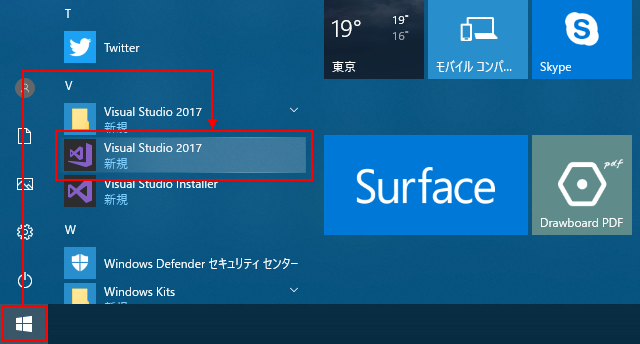
Visual Studioを初めて起動すると次のような画面が最初に表示されます。Microsoftアカウントでのサインインを求められますが、サインインしなくて利用することはできます。まずはサインインを行わずに起動します。画面下の方の「後で行う」と書かれたリンクををクリックして下さい。
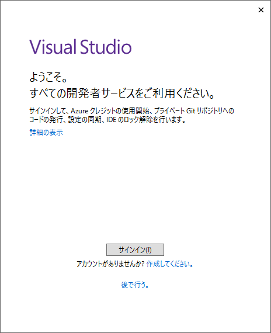
「開発設定」と「配色テーマ」を選択します。開発設定は「全般」、配色テーマは「青」を選択しました。この設定は後から変更できます。選択が終わりましたら画面下部の「Visual Studioの開始」をクリックして下さい。
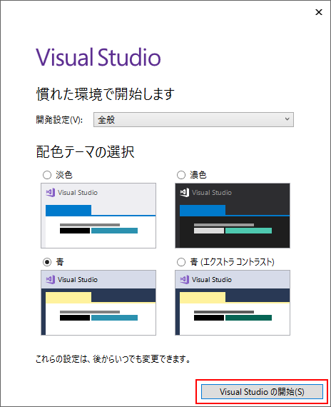
Visual Studioが起動しました。
MicrosoftアカウントでVisual Studioにサインインする
Visual Studioを次に起動すると最初からVisual Studioが起動し始めて起動したときに表示された画面は表示されません。
MicrosoftアカウントでVisual Studioにサインインするには、画面右上に表示されている「サインイン」をクリックしてください。(Microsoftアカウントをお持ちでない場合には、「Microsoftアカウントの使い方」を参考に事前に作成しておいて下さい)。
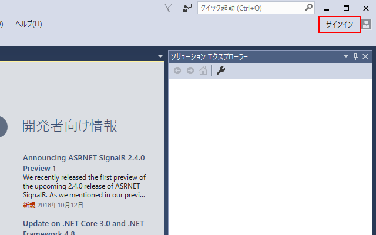
サインイン画面が表示されます。Microsoftアカウントのメールアドレスを入力し「次へ」をクリックしてください。
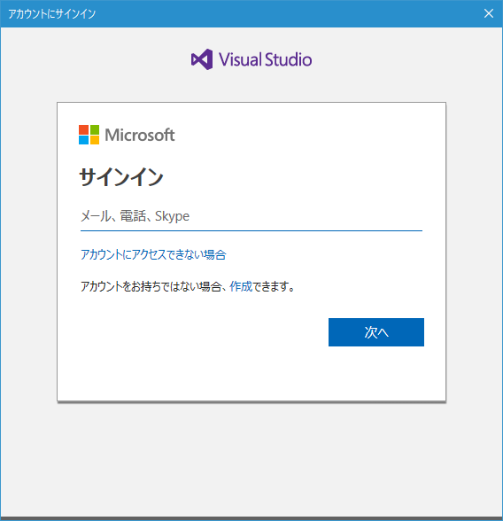
続いてMicrosoftアカウントのログイン用パスワードを入力し「サインイン」をクリックしてください。
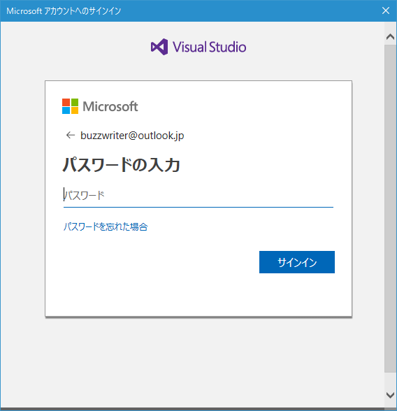
Visual StudioへMicrosoftアカウントでサインインが完了しました。
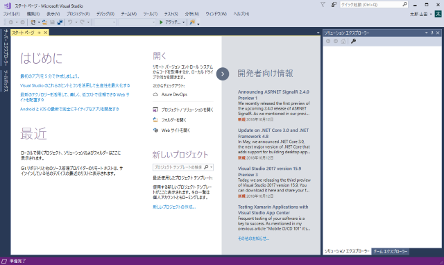
一度サインインを行うと、Visual Studioを次に起動したときはサインインされた状態で起動します。
Visual Studioからサインアウトする
サインインを行うとVisual Studioを終了しても次回起動時に自動的にサインインが行われた状態となります。明示的にサインアウトを行うには、Visual Studioを起動後に右上に表示されているアカウント名の右にある▼をクリックして下さい。
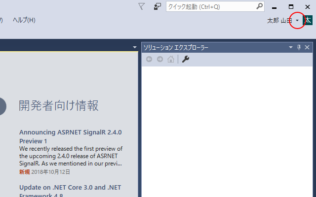
「アカウントの設定」をクリックしてください。
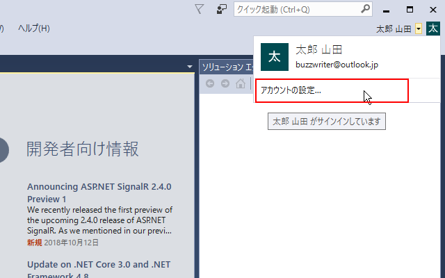
次のような画面を表示されますので「サインアウト」をクリックしてください。
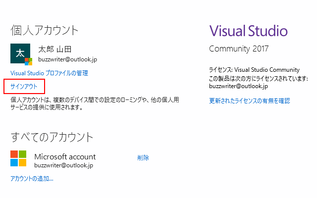
Visual Studioからのサインアウトが完了します。
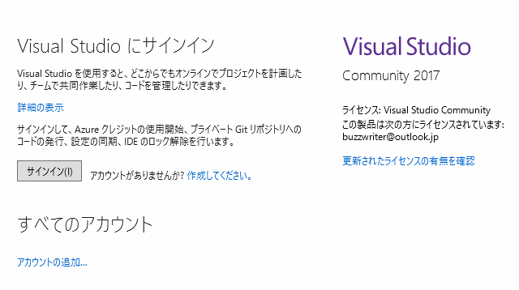
-- --
Visual Studioの起動方法、そしてVisual StudioへMicrosoftアカウントを使ってサインインする方法について解説しました。
( Written by Tatsuo Ikura )

著者 / TATSUO IKURA
初心者～中級者の方を対象としたプログラミング方法や開発環境の構築の解説を行うサイトの運営を行っています。